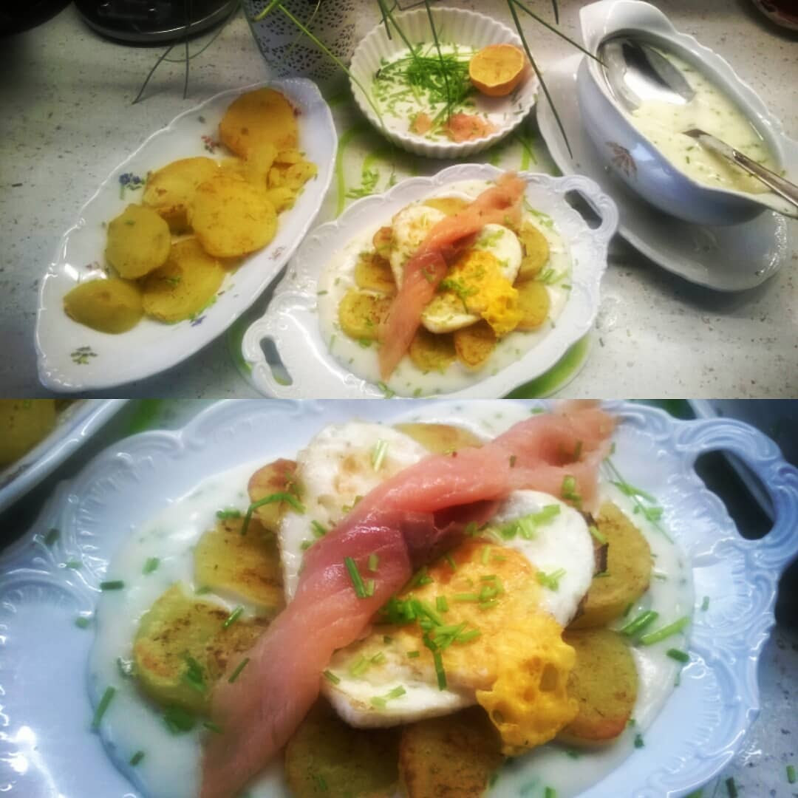

Pažítková omáčka podľa @sasoslava — Normy Jedál
Lunch chivessauce roast potatoes egg smoked Salomon...
Oběd pažit ková omáčka opečené brambory vajíčko uzený losos...a spousta pazitky...veselé jídlo...příprava jednoduchá na kousku másla opražíme mouku zásmažka. Přidat vývar nebo vodu trochu koření sůl povarit mléko či smetanu a nakonec pažitka nadrobno opéct uvařené brambory na pánvi vajíčko a navrch losos ...fakt rychlé a nebeský dobre vlastně dosti zdravé jídlo..
#obed #lunch #barevnejidlo #colourfood #chivesauce #pazitkovaomacka #pazitka #omacka #opecenebrambory #roastpotatoes #egg #vajicko #uzenylosos #smokedsalmon #dobrejidlo #dobrejedlo #vkuchyni #hautecuisines #recipesbyyou #jednoduchyrecept #simplyfood #simplyrecipes #cantrystyle #homemadfood #instafoodcz #foodstyle #foodinstagram #gastrofotos #gastroporn #lory_vintageandcountry #bydlimesi